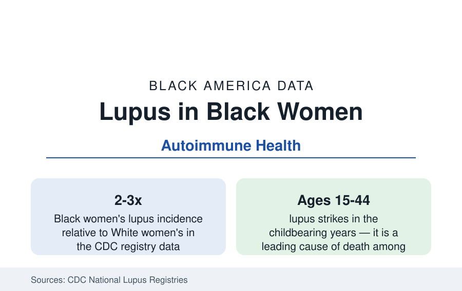

Black Public Health
Lupus and Autoimmune Disease in Black Women: The Body's Civil War
Lupus strikes Black women at two to three times the rate of White women — younger, harder, and with deadlier kidney involvement. The CDC lupus registries.

Systemic lupus erythematosus — the autoimmune disease in which the immune system attacks the body's own organs — selects its targets with demographic precision: nine of ten patients are women, and Black women develop lupus at two to three times the rate of White women in the CDC's registry data, at younger ages, with more severe organ involvement and higher mortality. Among young and middle-aged Black women, lupus ranks among the leading causes of death in the mortality analyses. This article reports the autoimmune file.
The Registry Picture
The CDC's population-based lupus registries (in Georgia, Michigan, California, and New York — the surveillance built because the disease had no national count) drew the modern picture: prevalence in the range of 70 to 200-plus per 100,000 women depending on the population, with Black women's rates at the top of every registry and their incidence concentrated in the teens through forties. The severity gradient is the file's core: lupus nephritis — kidney inflammation, the disease's deadliest common manifestation — occurs in a substantially higher share of Black patients (in the range of half, against a third of White patients in the cohort data), progresses to kidney failure at higher rates (the kidney profile's dialysis population includes lupus's graduates), and the cardiovascular and damage-accrual scores (the SLICC damage index's longitudinal data) run ahead at every duration. Mortality follows: lupus death rates for Black women run several times White women's in the vital statistics, peaking in the young-adult years where few other diseases kill.
Diagnosis: The Delay Data
Lupus is famously hard to see — its symptoms (fatigue, joint pain, rashes, fevers, hair loss, brain fog) mimic a dozen conditions and arrive in flares and remissions — and the diagnostic odyssey data stratify accordingly: years and multiple physicians to diagnosis on average in the patient-survey literature, longer where the presenting patient is a young Black woman whose complaints meet the credibility discount the pain literature documents. The consequences compound silently: damage accrues from the first flare, and the damage index at diagnosis predicts the prognosis — so delay is not an inconvenience but a dose. The rheumatology workforce's geography (the workforce profile's specialist deserts) and the antinuclear-antibody testing patterns of primary care are the system's measurable joints; the patient-advocacy data (the Lupus Foundation's chapters, the Black-founded lupus organizations) carry the navigation layer.
Treatment: Hydroxychloroquine and the Access Gradient
The therapy file has a scandal of simplicity at its center: hydroxychloroquine, a cheap generic taken from antimalarial service, is the backbone drug that reduces flares, damage, and death in the cohort studies — and its receipt and continuation stratify by the usual variables in the claims data, a disparity measured in survival. The immunosuppressive tier (mycophenolate, cyclophosphamide, the biologics belimumab and successors) prices into the specialty-pharmacy maze; the pivotal trials' enrollment of Black patients — the population with the most severe disease — ran notoriously low (the belimumab program's post-hoc analyses and the dedicated trials in Black patients that followed are the file's research-ethics chapter). The pregnancy data join the maternal profile: lupus pregnancies are high-risk by definition (flare, preeclampsia, the antiphospholipid complications), managed at the rheumatology-obstetrics interface the integrated centers model and most patients cannot reach.
The Wider Autoimmune Family
Lupus is the flagship of a family whose Black data share the pattern: rheumatoid arthritis (prevalence similar across groups; severity and treatment-escalation gaps in the cohort data), Sjögren's and scleroderma (scleroderma's Black data mirror lupus's — earlier, more diffuse, deadlier), sarcoidosis (the file's other extreme — Black Americans develop sarcoidosis at several times other groups' rates, with higher mortality, in the epidemiology data; its pulmonary form feeding the respiratory file), multiple sclerosis (long mislabeled a white disease; the incidence data now place Black Americans' rates comparable or higher, with faster disability accrual in the recent cohorts — a diagnostic-stereotype correction in progress), and the autoimmune thyroid and skin conditions (vitiligo's visibility making its psychosocial data the family's most intimate). The common threads the research draws: genetic-ancestry components in susceptibility, environmental triggers under study, and a care system whose subspecialty access decides outcomes in diseases where early treatment is the whole game.
Reading the Autoimmune Data
Autoimmune disease is the health section's argument with the 'lifestyle' frame: no behavior causes lupus, yet its outcomes are as socially patterned as any file here — because diagnosis speed, drug access, and specialist supply are social facts. Black women fight the body's civil war on the system's thinnest support lines; the registries, built only in this century, are the first honest maps of the battlefield.
More in Black Public Health
Hypertension Among Black Adults: Prevalence, Control, and Consequences
About 55 percent of Black adults have hypertension — the highest rate of any U.S. group. Prevalence, onset, control, and the stroke, heart, and kidney consequences in the data.
Diabetes Among Black Adults: Prevalence and Complications
Nearly one in five Black adults has diabetes, diagnosed or undiagnosed — and its complications fall with particular weight. The CDC data on prevalence, control, and outcomes.
Black Life Expectancy: The Gap at Birth and Its Causes
Black life expectancy at birth is about 73 years, roughly five years below the national figure — the summary measure of every health gap in this section. The CDC data.
Source: Centers for Disease Control and Prevention, National Lupus Registries; Lupus Foundation of America; American College of Rheumatology; National Institutes of Health autoimmune research.